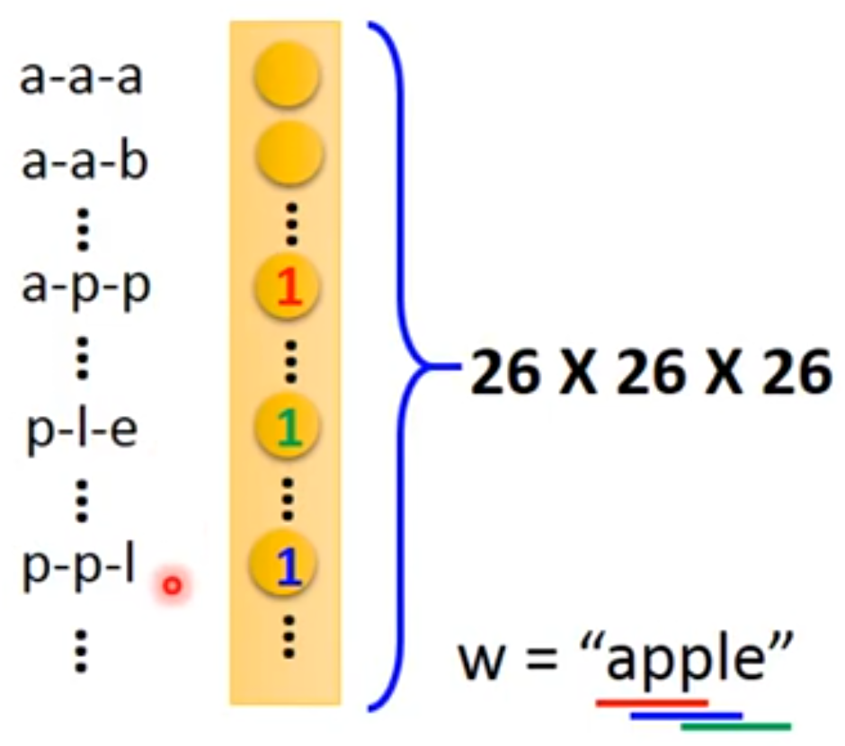

1. One-Hot表示法
例如单词表为：lexicon = {apple, ball, cat}
那么这三个单词的向量依次为：
apple = [1 0 0 0]
ball = [0 1 0 0]
cat = [0 0 1 0]
其它单词 = [0 0 0 1]
缺点：
把每个词孤立起来（任意两个向量的内积为0），这使得模型对词的泛化能力不强。
例如，从“I want a glass of orange juice”泛化到“I want a glass of apple juice.”
2. word hashing：

3. 缺点
it treats each word as a thing only to itself.
例如：
I want a glass of orange __.
I want a glass of apple __.
对于以上两种表征方式，orange和apple没有内在的联系，和其它单词是一样的，因此无法将第一句的知识泛化到第二句。